-
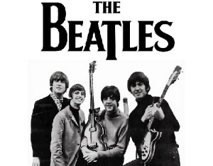
The Beatles
Створена в 1960 році The Beatles заклала основи сучасної поп- і рок-музики та стала найпопулярнішим гуртом всіх часів і народів
-
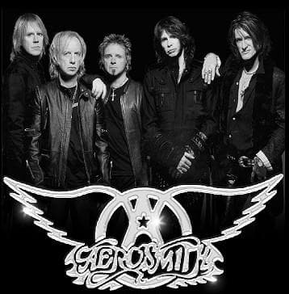
Aerosmith
Гурт Aerosmith був створений в 1970 році. Спочатку він називався Jam Band і складався з двох осіб — Джо Перрі і Тома Хемілтона
-
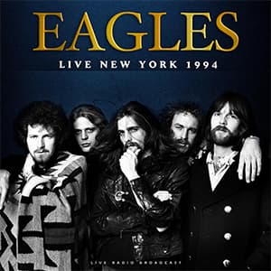
Eagles
У сімдесятих, після виходу Hotel California, слава Eagles прокотилася по всьому світу
-
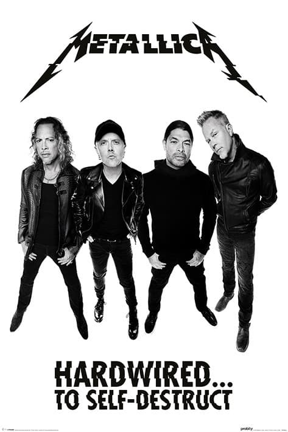
Metallica
Гурт Metallica Ларс Ульріх і Джеймс Хетфілд заснували у 1981 році. Відтоді музиканти отримали 9 премій Ґреммі та продали понад сто мільйонів примірників своїх альбомів
-
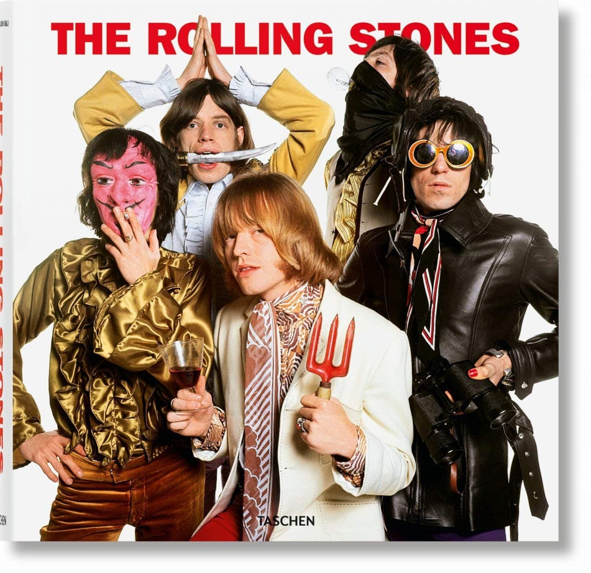
The Rolling Stones
Гурт заснували у 1962 році. У 1989 році гурт ввели до Залу слави рок-н-ролу.
-
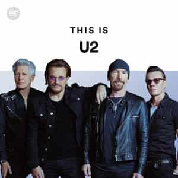
U2
U2, крім музики, відомі своєю громадянською позицією та виступами на захист прав людини та благодійністю.
-
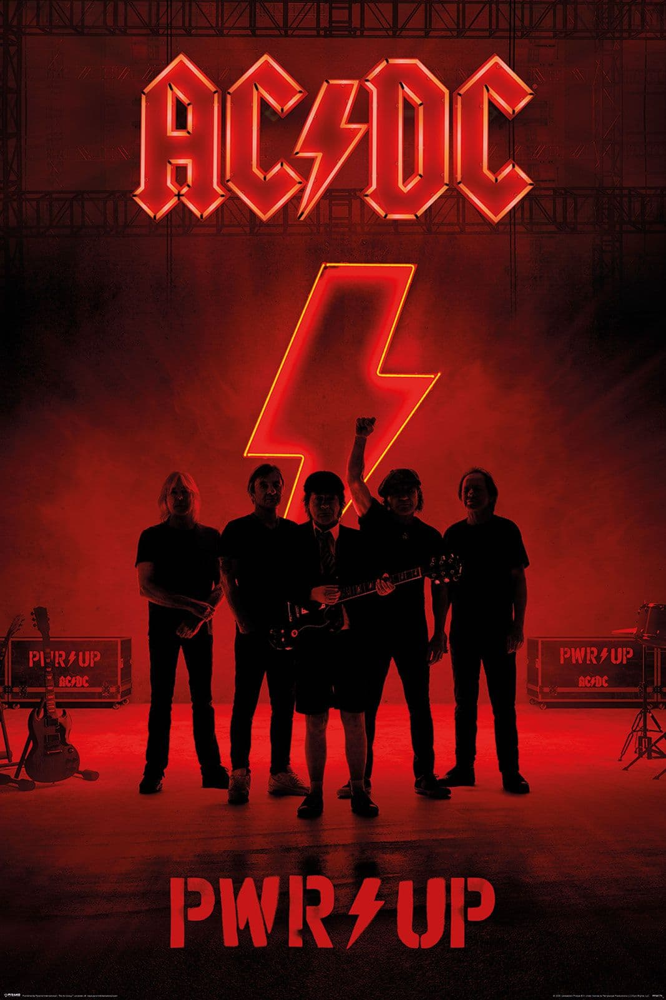
AC/DC
Ангус і Малкольм Янги створили гурт у далекому 1973. Відтоді їхні альбоми розкупили по всьому світу кількістю понад 200 мільйонів примірників.
-
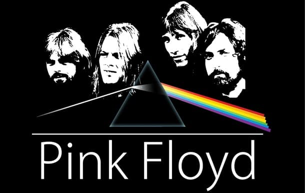
Pink Floyd
Майстри психоделічного та прогресивного року Pink Floyd славляться своїми філософськими текстами та творчими експериментами.
-
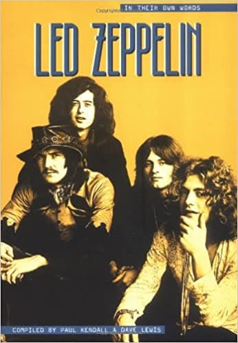
Led Zeppelin
За свою кар’єру гурт зібрав безліч нагород — власне, всі можливі призи у музичному світі. З 95-го року їхні імена посідають почесні місця у Залі слави рок-н-ролу
-
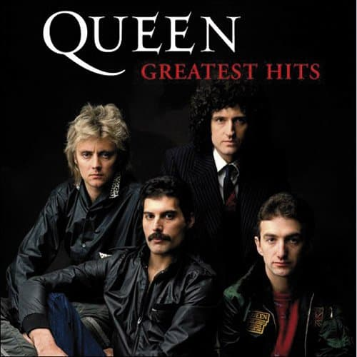
Queen
За свою славетну історію гурт продав понад 140 мільйонів примірників своїх альбомів
-
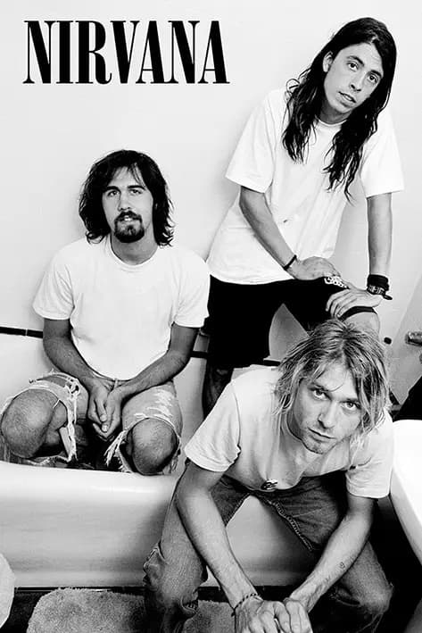
Nirvana
Американський рок-гурт, створений вокалістом та гітаристом Куртом Кобейном та басистом Крісом Новоселічем в Абердині, штат Вашингтон, у 1987 році.
-
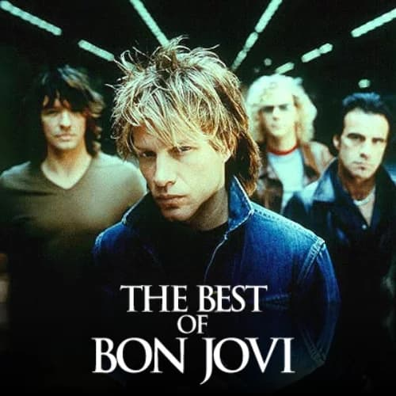
Bon Jovi
Американський рок-гурт з Нью-Джерсі, один з засновників стилю мелодійний хард-енд-хеві, що став популярним в середині 1980-х.